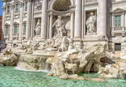
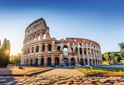
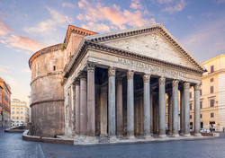
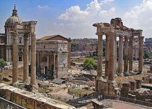
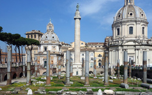

RIM, Italija
Moj omiljeni grad je Rim. On je glavni grad Italije sa 3,3 miliona stanovnika, nazivaju ga još i
Vječnim gradom i Gradom na sedam brežuljaka. Unutar Rima nalazi se Vatikan koji je suverena
teritorija Svete
Stolice. Istorijsko središte Rima i Vatikan nalaze se na UNESCO-voj listi svjetske baštine.
Rim je jedan od najljepših gradova svijeta, a njegova istorija vjerovatno je najbogatija i
najburnija od svih. Svi znamo priču o Romulu i Remu i o tome kako je nastao ovaj grad. No, jeste li
znali da u Rimu postoji više od 900 crkava? Rim je bogat svjetski poznatim znamenitostima, a neke od
njih navedene su u tabeli.
| Naziv znamenitosti | Kratak opis | Slika |
|---|---|---|
| Fontana di Trevi | Fontana je sagrađena u 18. vijeku, po narudžbi pape Klementa XII. Uz Trevi je vezana i jedna zgodna priča, koja kaže da će se posjetitelj koji ubaci kovanicu u fontanu vratiti u Rim. Turista je mnogo i svaki dan se ubaci kovanica u vrijednosti oko tri hiljade eura. |  |
| Koloseum | Zapravo se zove Flavijev amfiteatar, zato što je radove na njemu započeo Vespazijan iz porodice Flavijevaca 72. godine. U amfiteatru se se održavale borbe gladijatora, ali i simulacije pomorskih bitki, pri čemu bi Koloseum bio ispunjen vodom. Mogao je primiti 50 hiljada gledalaca, koji su na tribinama sjedili strogo odvojeni po statusu. |  |
| Panteon | Sagrađen je kao hram svih bogova. S vremenom je zapušten, a u 7. vijeku od zaborava ga je spasila prenamjena u katoličku crkvu te je kao takva bila najveća na svijetu sve do sredine 15. vijeka, kad je sagrađena Firentinska katedrala. |  |
| Forum Romanum | Forum je bio središte imperijalnog Rima, žila kucavica nekad najmoćnijeg carstva svijeta. Ovdje, u podnožju brežuljka Palatin, održavali su se izbori, okupljao senat, držani su neki od najslavnijih govora, ovuda su se pobjedonosno vraćale vojske sa svojih osvajačkih pohoda. Danas od foruma nije očuvano mnogo, ili barem ne u cijelosti. |  |
| Ponte Sant'Angelo | Sagraditi ga je dao car Hadrijan 136. godine, te je isprva most nosio njegovo ime. Novo ime dobio je krajem 6. vijeka u čast jednog anđela. Most je poznat po brojnim figurama na njemu. |
 |
| Trajanov stup | Trajanov stup spomenik je podignut kao trajni spomen na cara Trajana te prikazuje njegove vojne pobjede u tadašnjoj Daciji. Trajan je carevao od 98. do 117. godine te je ostao zapamćen kao jedan od najuspješnijih i najomiljenijih rimskih careva. |  |
Više o navedenim, ali i o drugim znamenitostima Rima možete pročitati na Web stranici grada čija je adresa navedena gore.